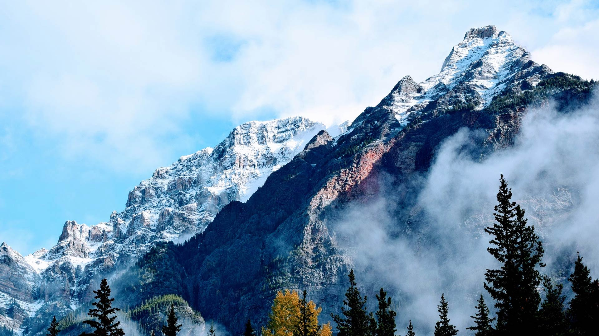
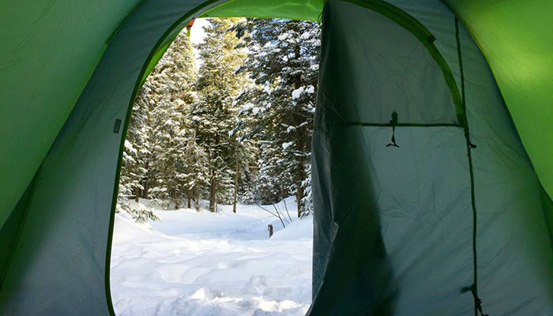
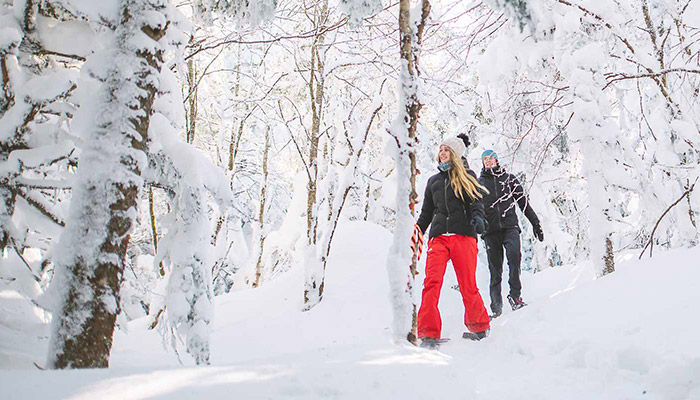
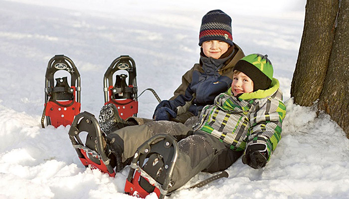
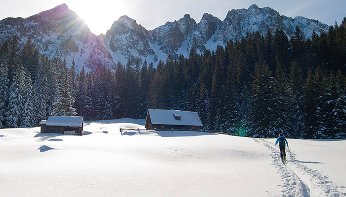
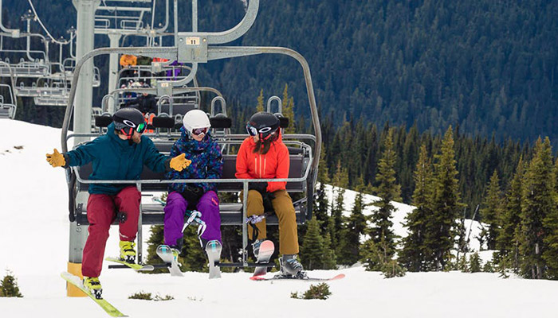
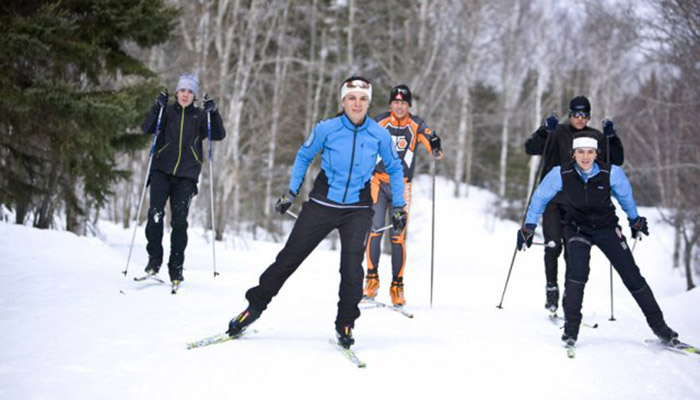
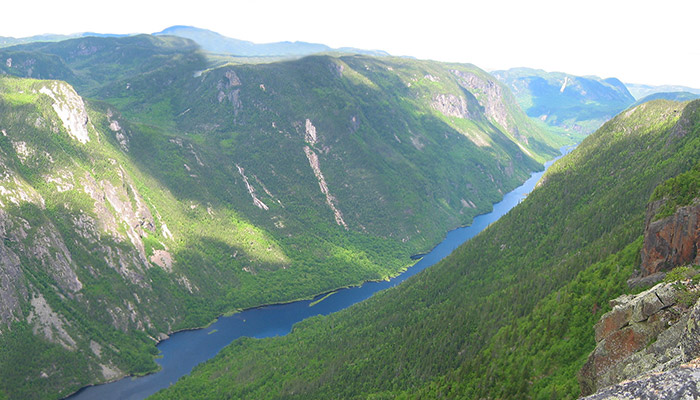
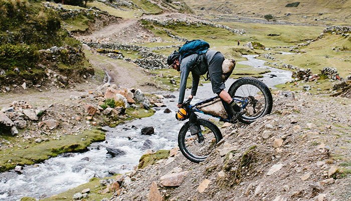

Boréal Magazine
Articles
Camping d’hiver - 26 trucs pour débutants
Quelles bottes choisir pour faire de la raquette
10 sentiers de raquettes pour tous au Québec
Comment s'habiller pour faire du ski de fond ?
Quels sont les skis parfaits pour vous ?
Les meilleurs endroits pour faire du ski de fond
5 sentiers difficiles au Québec pour randonneurs aguerris
Fat biking : ce que vous devez savoir sur le vélo tout terrain
À propos
Contact
Boréal Magazine
Le magazine 100% plein-air


Camping d'hiver
Camping d’hiver - 26 trucs pour débutants

Raquettes
Quelles bottes choisir pour faire de la raquette

Raquettes
10 sentiers de raquettes pour tous au Québec

Ski de fond
Comment s'habiller pour faire du ski de fond ?

Ski alpin
Quels sont les skis parfaits pour vous ?

Ski de fond
Les meilleurs endroits pour faire du ski de fond

Randonnée pédestre
5 sentiers difficiles au Québec pour randonneurs aguerris

Randonnée pédestre
5 sentiers difficiles au Québec pour randonneurs aguerris
Abonnez-vous à notre infolettre